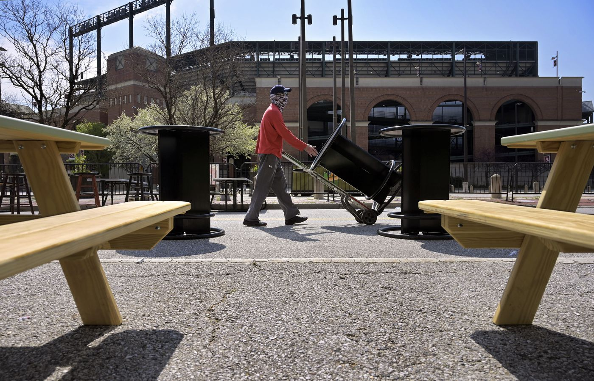
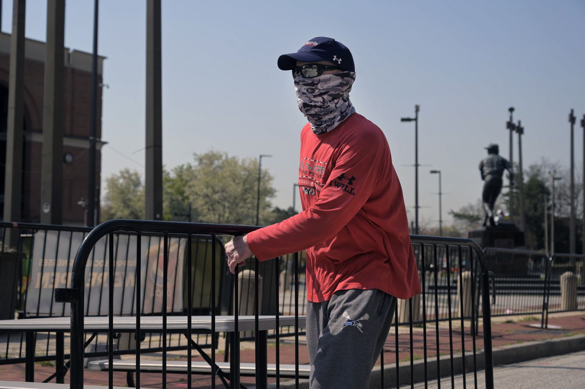

Half of Pickles Pub’s sprawling first floor sits in darkness, bar stools resting upside down on high-top tables — the universal bar signal for “go away.” Some of the stools haven’t touched a floor in more than a year. Some of the HD televisions lining the walls haven’t glowed in that same span. It should smell like beer and wing sauce. It smells like industrial cleaner and lost revenue.
In the other half, a dozen or so socially distanced patrons sit and hoist beers under tasteful lighting at the bar and at the streetside window tables, where the view is of Brooks Robinson’s backside, his bronzed form frozen in the middle of a throw to first, and beyond that — just a lazy flyball away — Gate F of Oriole Park at Camden Yards, which hasn’t welcomed a baseball fan in more than 18 months.
It is a stark dichotomy that has defined the past 12 months for this beloved Baltimore sports bar and thousands like it across the country: the light vs. the darkness, signs of life vs. the faint hint of death. Having weathered — they hope — the worst of the coronavirus pandemic and with fans returning to stadiums and customers to bars and restaurants, their owners crave a return to normalcy while quietly worrying whether such a thing is even possible.
What’s coming next for Pickles Pub: happy hour or last call?
“It feels very Darwinian,” Tom Leonard, the bar’s co-owner and general manager since 2005, said one recent afternoon. “But we’ll survive. If we can survive everything that’s happened so far, we can survive anything.”
He said this from a stool on the east side of the bar, which opened in 1989, in a brick rowhome built in 1890 — which means the structure has witnessed not just one pandemic but two. Light from a sunny spring day poured through the front window. Outside, the warming air gave the unmistakable feel of the approach of baseball season.
At Pickles, the march of time is marked in Opening Days, when the humble sports bar, with a fire-marshal-mandated indoor occupancy of 498, expands to the street and the plaza outside, the crowd engulfing the base of the Brooks Robinson statue — as many as 5,000 people gathering to celebrate the arrival of another Orioles season.
“Opening Day,” said ChristyLee Pollock, a Pickles bartender since 2003, “is our Christmas.”
On March 12, 2020, Leonard had just picked up his special-event permit and liquor extension from the liquor board, giving Pickles the green light to blow out another Orioles home opener, just two weeks away. That’s when he got the call: All permits and extensions were being voided. The next day, Friday the 13th, brought word that everything was being shut down. The pandemic had arrived. Instead of ramping up for Opening Day, Leonard spent the next two weeks refunding deposits the bar had received for large-group celebrations over St. Patrick’s Day weekend and trying to pare down inventory.
Pickles wouldn’t open again until June 22, outdoor-only at that time. When MLB’s delayed Opening Day finally arrived, in late July, Leonard tried to drum up interest through the bar’s social media accounts. Imagining a smaller but still substantial crowd — despite the fact no fans were allowed in the stadium — he and his staff pushed all the TVs outside. He had Orioles and Pickles swag to give away — beer koozies, stickers and the like — and brought in extra bartenders and kitchen staff.
It was almost a total washout. Leonard estimates he had a dozen customers all day, several thousand fewer than the year before.
“There have been a lot of rude awakenings through this whole thing,” he said.
And now, another Opening Day approaches, with the Orioles’ home opener slated for 3 p.m. Thursday against the Boston Red Sox at Camden Yards — which is limited to 11,000 fans because of state and local health guidelines. Leonard knows enough about math to understand Opening Day isn’t going to save Pickles.
- Tom Leonard, Pickles Pub co-owner and general manager
“Of those 11,000, pretty much all of them will be season ticket holders, who skew older,” Leonard said. “So you can take those 11,000 and ask, ‘Who would even consider coming over here?’ — and probably cut it in half. You’ll get some [people] but not many.”
Forget about jamming standing-room-only hordes into the bar and the plaza outside: Per city and state regulations, customers must be seated to remove their masks for eating and drinking.
In Before Times — which is to say, as recently as 2019 — Leonard would open Pickles at 6 a.m. on Opening Day, with a free breakfast buffet and $2 Miller Lites and a local radio station hosting a remote broadcast. The crowd would swell throughout the day, straight through to last call.
“But this year,” he said, “I’ve reached out to all my liquor and beer reps: ‘Hey, got any deals with any radio stations?’ But they’re all running so slim right now. I reached out to the radio stations, and unless you want to pay more than you’ll generate in revenue, there’s no interest. So it’s not going to be like one of our normal Opening Days. I wish it was.”
These days the question on Leonard’s mind is broader and darker: After covid-19, what does “normal” even look like?
Eric Cotton, pub co-owner moves a table outside Pickles Pub as preparations are made for the first Baltimore Orioles' Opening Day Wed., April 7, 2021, since its cancellation because of the coronavirus pandemic. (Karl Merton Ferron/The Baltimore Sun)
Sports bars lost because of the pandemic
If you pulled yourself a draught and poured one out for all the late, great sports bars that threw in the towel these past 12 months, you would kill a keg or two:
Collins Pub in Morris Plains, N.J., which shut down a few days shy of its 50th anniversary. Bleachers in Redding, Calif. Macho’s in Allentown, Pa. Jake’s in Flemington, N.J. The Great Grizzly Bear in St. Louis. Paradise Sports Lounge in Delray Beach, Fla. Blue 42 in Hartford, S.D. Joe Senser’s in Roseville, Minn. Milo’s in Denver. And many more, each one carried to sports-bar heaven on angels’ wings — slathered in your choice of mild, medium, hot or atomic sauce.
“Paddle on,” the Lucky Duck Pub in Taylor Mill, Ky., signed off in its farewell Facebook post, “even though it may not always be in the direction you thought.”
Philadelphia lost the Draught Horse and Toll Man Joe’s. The D.C. metro area lost Capitol Lounge on the Hill and the Bracket Room and the G.O.A.T. in Clarendon. New York City lost Finnerty’s in the East Village, Rathbones on the Upper East Side and Foley’s near the Empire State Building, as well as 200 Fifth in Park Slope, Brooklyn. Boston lost McGreevy’s, Finn McCool’s and the Fours. (“Basically, we ran out of money,” Fours owner Peter Colton told the Boston Globe. “How much debt do you want to go into? ... It’s gut-wrenching.”)
They announce their own demises in somber Facebook posts, almost always with a “heavy heart” — those heavy hearts stacking upon each other with a cold clang, like 25-kilogram plates at the end of a weightlifter’s barbell.
Each place had its own character — mostly polished wood, local craft brews and walls of televisions — and its own characters: the reliable regulars known by their first names, the affable bartenders who worked both the beer taps and the remote control with aplomb, the avuncular owner flitting between the front and the back of the house, that one guy who always insisted one TV stay on some foreign rugby match he had money riding on.
Though there is no reliable data breaking out sports bars as a subgroup, the National Restaurant Association estimates 110,000 restaurants and bars have temporarily or permanently closed since the pandemic began, with industry revenue down $240 billion from expected levels.
Three years ago, with business thriving, Bob Barnett moved his Library Sports Pub & Grill in the Detroit suburb of Novi, Mich., to the other side of Grand River Avenue, more than doubling his footprint to 7,500 square feet. And then the pandemic struck. In February, he announced the bar would be closing. Its last day of operation was March 28.
“How was I going to survive?” Barnett said in a telephone interview. “I’m a cash-flow business, and it’s not hard to run out of cash when you have nothing coming in and you still have to pay for your fixed costs.”
In the beginning of the shutdown, the Library tried to make a go of it with takeout food, only to discover the hard truth:
“I’m not a carryout place,” Barnett said. “I’m a gathering place.”
That gets at the heart of why sports bars seem to have fared even worse than most bars or restaurants during the pandemic: The communal experience of a sports bar — gathering in groups for the big game, united in fandom and thirst — is more essential to its livelihood than it is for, say, a date-night restaurant or a quiet, darkened bar. When the sports world shut down last spring, sports bars, already dealing with the same health restrictions as other establishments, were hit twice as hard.
“It’s been like a double whammy,” said Kevin Moll, president of Restaurant Consulting Services Inc. “If there’s fewer or no games, what’s the incentive to go to a sports bar? Their business model is different. It’s the communal, the social, the gathering. If an [establishment] primarily serves alcohol and they have no takeout or drive-through, how do you survive under that model?”
The answer, sadly, is that many don’t.
“I’m going to feel really proud,” Barnett said when asked before the Library’s final night how it will feel to turn off the lights for the last time. “I know a lot of my customers will be emotional.” He paused, then started again, his voice growing quieter. “This has been home. I’ve been so lucky. So lucky. I just wish I had more financial luck.”
Staying afloat
This is the bottom line on how Pickles is faring: “Our sales are down 60 percent — not just from 2019 but from our worst year,” Leonard said.
This is what has kept Pickles alive: The owners received more than $100,000 in federal Paycheck Protection Program loans, the bulk of which went to covering payroll. The Famous Fund, a nonprofit started by the owners of Jimmy’s Famous Seafood in Baltimore as a way to assist struggling bars and restaurants around the city, gave them another $15,000, which the owners handed out in bonuses for their staff. Neither Leonard nor co-owner Eric Cotton has taken a salary since the pandemic hit more than 12 months ago.
“We’ve made some big life adjustments,” Leonard said.
These are some of the things Leonard has done to steer Pickles through the pandemic: He used the shutdown to undertake a much-needed and thorough renovation and deep-cleaning of the building. He got serious about social media. On Easter Sunday, he donned bunny ears and delivered baskets full of chocolate and six-packs of beer to his employees. He trimmed down the food menu to focus on quality, and he slashed both the hours and days of the week the bar stayed open. He ditched the third-party security company the bar had been using and started tossing out belligerent drunks himself.
“You end up working a lot harder than you ever have for less [return on investment] than ever,” he said. “And that can really grind people down.”
And he learned to lower expectations. One night in November, after realizing they had done $1,100 in takeout sales, Leonard and Cotton found themselves high-fiving each other — before suddenly realizing how absurd that was.
“If it were any other year and we only did $1,100 in sales [in a day], I’d have looked at him and said, ‘Why the f--- are we even open?’ ” Leonard said. “And here we were, high-fiving each other.”
The Pickles team understood early on the existential threat presented by the pandemic. It never seriously considered packing it in, Leonard said, but it understood the possibility was real.
“We definitely had some serious conversations: What are we going to do? How are we going to make it through this?” Leonard recalled.
Pickles employees had to weigh their own options. “It definitely crossed my mind,” said Pollock, the longtime bartender, when asked whether she had to consider alternate plans. “I have a master’s in education. I thought about, ‘Do I fall back on that now?’"

Eric Cotton, pub co-owner moves a table outside Pickles Pub in the shadow of Oriole Park at Camden yards as preparations are made for the first Baltimore Orioles' Opening Day Wed., April 7, 2021, since its cancellation because of the coronavirus pandemic. (Karl Merton Ferron/The Baltimore Sun)
It wasn’t until around the beginning of March that Leonard allowed himself to think things might be turning the corner. The state of Maryland and Baltimore city began loosening dining restrictions; on March 26, restaurants and bars were allowed to go up to 50 percent capacity inside and 75 percent outside. The bar did well on St. Patrick’s Day and the opening days of March Madness. But something keeps Leonard from celebrating too much.
“It’s the habit part that scares me,” he said. “We just went through a whole baseball season and [NFL] season when fans couldn’t come down here. A whole f---ing year. The whole online ordering thing might be a longtime habit that never goes away. That’s my biggest fear.”
Baseball season, the traditional high season at Pickles, will be the bar’s moment of truth — still a daunting notion when you combine a stubborn pandemic, the habits formed by customers from a year’s worth of staying home and the 25 percent capacity limit in place for Orioles games.
Leonard figures the stools will come down off the high-tops in the downstairs dining area for the home opener, but there is another bar and a private room upstairs where the stools have been upside down since Jan. 11, 2020, the day the Ravens last hosted a playoff game — two months before all hell broke loose. During the pandemic, those rooms have been converted to extra storage, overtaken by boxes and supplies.
But every now and then, there comes a moment when you remember why you bought a bar and why that bar still matters. On March 21, the Pickles staff and regulars, about 30 in all, came together for a celebration of life for Larry Sunderland — a longtime Camden Yards usher and loyal Pickles customer who died 15 days earlier at 93. Sunderland used to show up on Sunday mornings during homestands with a box of doughnuts for the Pickles staff, man his post in Section 272 for the game, then stop back in for beers afterward, still wearing his uniform and name tag.
That afternoon, the Pickles crew placed a framed picture of Sunderland and a pint of Miller Lite at his seat, where a tiny, commemorative plaque had been affixed (“Forever in our hearts”), and took turns remembering him — a gathering of friends that wouldn’t have been possible 12 months or even three months ago.
“It felt like a family,” Pollock said of that day.
The death of a beloved customer affirmed something about life. So in the shadow of Brooks Robinson, with the midday sunshine streaming in through the windows, they poured one out for Larry, and they returned to their stations — the regulars to their stools, the bartenders to their taps — and another day hurtled onward at Pickles Pub.
Eric Cotton, pub co-owner moves a barrier into position outside Pickles Pub as preparations are made for the first Baltimore Orioles' Opening Day Wed., April 7, 2021, since its cancellation because of the coronavirus pandemic. (Karl Merton Ferron/The Baltimore Sun)